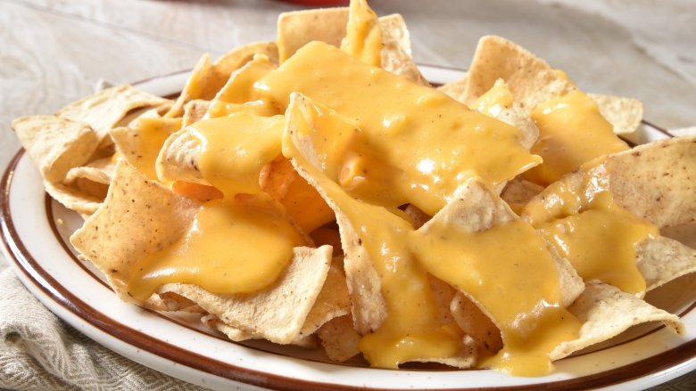

Nachos

Description
This is one of my favorite dishes, and one that is easy to make! It's only a few ingredients and will make you want to come back for more cheesy goodness
Ingredients
Directions
- Place a layer of chips on a microwave safe plate.
- Sprinkle cheese on top of this layer. You should place enough cheese to almost cover the chips completely
- Add another layer of chips on top of the cheese. This layer should be smaller than the first layer.
- Cover these chips with more cheese. Repeat this process until your heap of nachos is big enough for your appetite.
- Microwave in 30 second intervals. Check continuously and stop microwaving when all the cheese has started to melt.